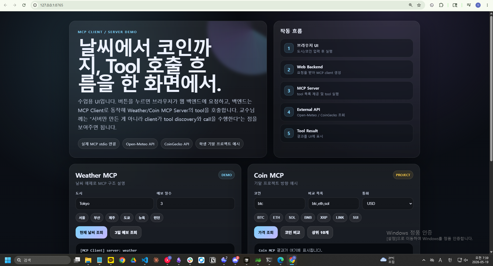
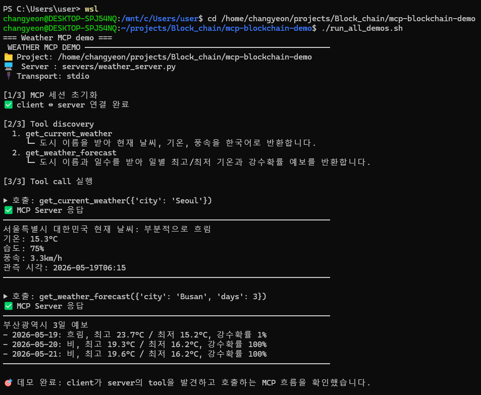
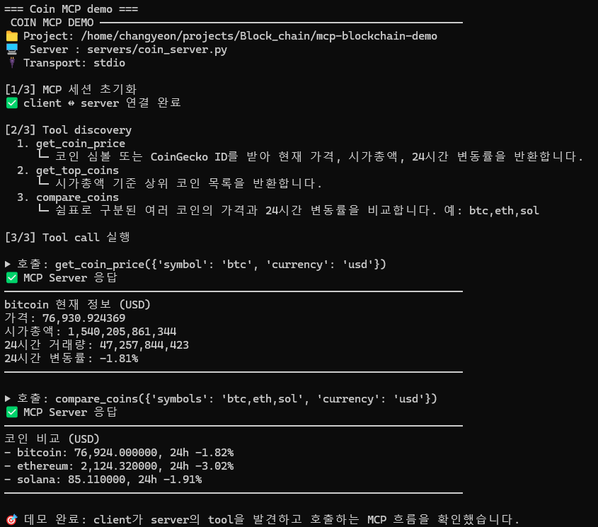

사진 클릭 또는 Esc로 닫기

블록체인 실습 저장소의 전체 구조를 빠르게 이해하고, 핵심인 MCP client/server 분리 데모를 발표 흐름으로 설명합니다.
주요 근거: README.md, week/mcp-blockchain-demo/README_KR.md, MCP demo source files
지갑 연결, 테스트넷 송금, Solidity, ERC20/Staking, 보안 실습까지 주차별 자료를 제공합니다.
주차별 보강 문서와 HTML 자료, QA/evaluation 결과가 별도 폴더로 정리되어 있습니다.
README에서 가장 강조하는 부분: MCP server만이 아니라 client/server 구조를 분리해 보여줍니다.
발표 포인트: “전체 커리큘럼 저장소이지만, README의 초점은 MCP 데모 설명에 있다.”
Block_chain_repo/ ├── README.md # 저장소 핵심 안내: MCP demo 중심 ├── 20260428-국민대블록체인강의.pdf ├── week/ # 주차별 실습/데모 자료 ├── 이론보강/ # 주차별 이론 보강 HTML/MD와 QA ├── 특강/ # 특강 DApp/Remix 자료 ├── REPO_CLEANUP_*.md # 정리/중복/감사 기록 └── presentation.html # 이번 발표 자료
답: 이 프로젝트는 서버만 있는 구조가 아니라, MCP client가 server에 연결하고 tool을 발견·호출하는 흐름을 명확히 보여주는 데모입니다.
stdio로 MCP server 연결list_tools()로 tool discoverycall_tool()로 실제 인자와 함께 tool 호출list_tools()call_tool()핵심 문장: 브라우저 UI도 단순 정적 화면이 아니라, Starlette backend가 MCP client가 되어 server tool을 호출합니다.
week/mcp-blockchain-demo/가 README의 중심입니다.week/mcp-blockchain-demo/ ├── README.md # 영어 / GitHub 공개용 ├── README_KR.md # 한국어 / 수업 설명용 ├── pyproject.toml # Python 3.11+, uv 의존성 ├── run_all_demos.sh # CLI demo 전체 실행 ├── run_ui.sh # browser UI 실행 ├── web_app.py # Starlette backend + MCP client ├── web/index.html # 브라우저 데모 콘솔 ├── servers/ │ ├── weather_server.py # Weather MCP server │ └── coin_server.py # Coin/Blockchain MCP server ├── clients/test_mcp_client.py# CLI MCP client └── assets/screenshots/ # 발표용 스크린샷
clients/와 servers/ 분리를 보여줍니다.web_app.py가 웹 backend이면서 MCP client 역할을 한다고 설명합니다.| 서버 파일 | Tool | 역할 |
|---|---|---|
servers/weather_server.py | get_current_weather(city) | 현재 날씨, 기온, 습도, 풍속, 관측 시각 반환 |
servers/weather_server.py | get_weather_forecast(city, days) | 일별 예보, 최고/최저 기온, 강수 확률 반환 |
servers/coin_server.py | get_coin_price(symbol, currency) | 현재 가격, 시가총액, 거래량, 24시간 변동률 반환 |
servers/coin_server.py | get_top_coins(limit, currency) | 시가총액 기준 상위 코인 목록 반환 |
servers/coin_server.py | compare_coins(symbols, currency) | 여러 코인의 가격과 24시간 변동률 비교 |
btcethsolxrpadadoge
cd week/mcp-blockchain-demo uv sync ./run_all_demos.sh # 개별 실행 uv run python clients/test_mcp_client.py weather uv run python clients/test_mcp_client.py coin
[1/3] MCP 세션 초기화 [2/3] Tool discovery [3/3] Tool call 실행
문제 해결 시에는 --verbose로 MCP/HTTP 내부 로그까지 확인할 수 있습니다.
cd week/mcp-blockchain-demo ./run_ui.sh 브라우저 접속: http://127.0.0.1:8765



블록체인 기초, 가격 조회, HTML 발표 자료
MetaMask 지갑 연결, 가격 추적, 트랜잭션 과정
Sepolia/Base Sepolia/GIWA 테스트넷, gas·nonce·signature·bridge
스테이블코인 네트워크와 explorer 자료
Solidity, Remix, Faucet, ERC20, Staking DApp
DAO reentrancy와 Parity wallet 보안 시뮬레이션
발표 포인트: MCP 데모는 이 커리큘럼 위에 “기말 프로젝트 방향”을 얹는 역할입니다.
이론보강/START_HERE.md로 진입점 제공특강/list_tools(), call_tool()로 검증한다.get_coin_pricecompare_coinsget_wallet_balanceget_latest_blocksget_token_metadataanalyze_transaction_hash
| 시간 | 내용 | 보여줄 파일/화면 |
|---|---|---|
| 0:00–1:00 | 저장소 목적과 전체 구조 | README.md, 루트 구조 |
| 1:00–3:00 | MCP client/server 핵심 질문과 답 | README의 MCP flow |
| 3:00–5:00 | 소스 구조 설명 | servers/, clients/, web_app.py |
| 5:00–7:00 | CLI demo 실행 | ./run_all_demos.sh |
| 7:00–9:00 | Web UI demo 실행 | http://127.0.0.1:8765 |
| 9:00–10:00 | 학생 프로젝트 확장 방향 | 예시 MCP tools |
이 저장소에서 가장 중요한 설명은 MCP demo의 client/server 분리입니다.
CLI client와 Web backend가 모두 MCP client로 server tool을 발견하고 호출합니다.
학생들은 블록체인/코인 도메인 tool을 직접 설계해 MCP 최종 프로젝트로 확장할 수 있습니다.